SKG 案例解析在华与华方法中，我们把企业发展阶段分为三个成功：创业成功、企业成功和事业成功。创业成功是找到或创造了一种市场需求，开发了成功的产品和服务，赢得了市场，干成了事，赚到了钱。企业成功是巩固和完善了核心能力、经营活动和竞争壁垒，市场地位能够做到不可撼动。企业内部组织稳定，人才济济，具有优良的企业体质，老板志有定向，内心平静，仁者不忧，知者不惑，勇者不惧。事业成功是成为所含行业的三个代表品牌：代表先进的生产力；代表先进的文化；代表顾客的利益和社会的进步。事业已经融入全人类的宏大叙事，成为全人类共同的事业，老板诚意正心，为这一事业服务，这时候，你才是真的成功了。
与此同时，我们把品牌服务也分为三个阶段：品牌上场、品牌定型和品牌经营。华与华的大多数客户是处在从创业成功走向企业成功的阶段，完成品牌定型，再走向事业成功的这个第二阶段。 SKG 就是这样一个代表案例。创业成功的企业往往还并没有获得经营安全。创业的时候主要考虑怎么挣钱，成功之后主要考虑怎么防范风险。华板在《华杉讲透孙子兵法》书中，反复强调的就是不败兵法，一生不败。对企业的经营也是低风险偏好，永远把经营安全放在第一位。因此，企业经营到最后，追求的就是不败，从创业成功走向企业成功，安全经营，在社会上保有一席之地，实现永续经营，永不出局。SKG 成立于 2007 年，经过 10 多年的发展，研发了一款颈椎按摩仪，其创新运用脉冲技术，外观设计酷似耳机，让消费者能够通过这样一款时尚有型的产品，随时随地放松脖子。在线上平台的流量红利期， SKG 颈椎按摩仪快速成为全网种草、达人明星纷纷推荐的大爆品，企业营收实现了翻倍增长，也面临了新的问题：越来越多的商家入驻线上平台，流量成为了一种资源，一种权利，平台对商家从原来的流量扶持、流量贴补，变成了流量分发、流量竞价，流量成本一天比一天高，如何实现消费者的指名购买，不靠竞价靠品牌？
▲ SKG 按摩仪早期产品
正是带着“建立品牌”的课题， SKG 和华与华于 2019 年达成了合作，今年我们已经共同携手走过 3 年。华与华认为，品牌是经营的结果，也是经营的方法论。经营上如果过于依赖于某一渠道流量资源，隐藏着巨大的经营风险：1 ）渠道流量和品牌方处于双方博弈关系中，容易被强势渠道流量所绑架，议价权掌握在渠道上，品牌经营处于被动；2 ）渠道流量来源过于单一，品牌与其强绑定，如果这一渠道出现问题，品牌则容易陷入系统性风险，被一锅端，跟着倒霉。因此，经营一定要构建多元的流量结构，有了更多的博弈参与方，才有流量的平衡和生长，才有流量生态的繁荣，也才有企业的安全经营。今年是我们和 SKG 合作的第 3 个年头，这 3 年，我们首先解决了品牌战略，通过品牌定型，形成众口如一的品牌资产，为未来百年企业的发展道路奠定基础；然后解决营销战略，从线上到线下，构建起自我生发与平衡的流量生态，获得经营安全；于此同时，我们正在解决企业战略，从可穿戴按摩仪的提出，到科技健康礼品的战略，助力企业走向事业成功。本文，我们将为你分享合作 3 年来， SKG 从创业成功走向企业成功的两大关键成果：
1 、品牌定型，为企业未来百年的发展道路奠定品牌基础；
2 、从线上到线下，建立流量生态，获得经营安全：改变过去的线上流量依赖，打响从专架到专柜，到专卖店，到旗舰店的四大战役，实现线上线下的平衡发展，建立自己能生长的流量生态，从而获得经营安全。3 、企业战略涌现中的关键决策：从未来穿戴到未来健康，定义科技健康礼，打开礼品市场，让好用、有用、放心用的科技产品，改善更多人的健康。
阶段 1
品牌定型，为企业百年发展奠定基础
华与华品牌定型，在于找到品牌的基因，并用超级符号来实现品牌的基因表达。品牌没定型就是众说纷纭，品牌定型后就是众口如一的。众口如一的品牌资产，就是在为企业未来百年发展的发展道路奠定品牌基础。商品就是符号人是符号动物，符号携带或明或暗的意义，深刻影响着人的行为，是驱使我们消费的动力。商品就是符号，在消费社会人们更是通过消费符号完成对自我角色的定义。比如一个姑娘，她拎着 LV 的包，是为了通过这个商品道具的符号意义，来传达自己的角色。人通过符号系统把他的身份、角色定义出来，传播出去。
▲图片来源于网络
区别于传统的物理按摩仪， SKG 颈椎按摩仪，采用了 TENS 脉冲、 EMS 脉冲、中频脉冲、 PET 加热技术、石墨烯加热技术等领先技术，不仅在便利上实现随时随地缓解颈椎不适，更加在功能上区别于物理的表面按摩，能够作用到皮肤深层， 15 分钟快速缓解酸痛不适。
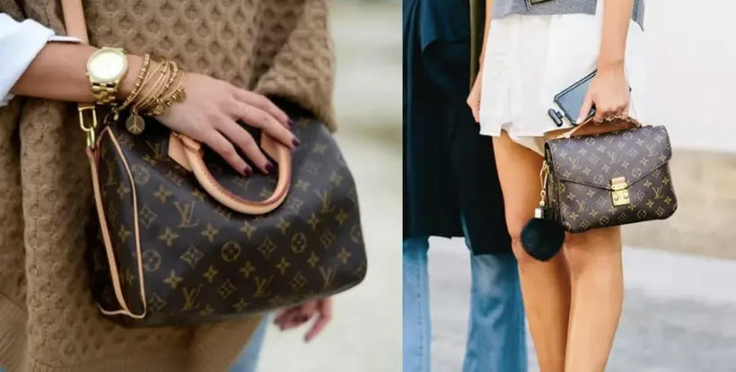
技术上的创新也带来了外观的革命性突破， SKG 颈椎按摩仪，无论是工业造型设计，还是配色、工艺，让 SKG 成为天生带有时尚基因的商品。因此，我们要创造一套超级符号及符号系统，要让 SKG 的时尚不是一时的风尚，而是成为“时尚意义”的永恒表达。从 SKG 原来的灯箱海报可以看出，除了广告语之外，几乎所有的元素都在变化。产品会迭代，颜色会变化、明星会更换，当所有的元素只存在一时一刻，那每一次的投入都相当于是让消费者重新认识品牌，每一次的投入都是一次性的费用，没有积累，一切都是0。
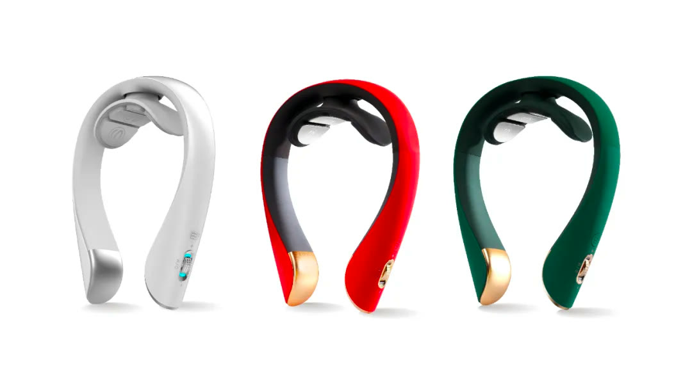
▲ SKG 早期不断变化的宣传物料
而当品牌一旦有了固定不变的超级符号和符号系统，就相当于是给品牌开了一个户头，每一次的广告投放，都在给它增值。它本身将成为一种流量的来源，反哺品牌，贴上这个符号产品就能卖。SKG 最大的品牌资产就是它的名字“ SKG ”，它来源于 SKG 董事长刘总对于企业发展愿景的三个关键词，即 Smart （智能）、 Kind （亲和）、 Global （全球化）的首字母，但是这三个字母属于内部传播思维，对于消费者而言，很难通过这三个字母来理解它们背后的意义。
我们说一切的传播都是符号的编码和解码，在编码和解码过程中存在一定的信息损耗，我们想表达的可能有 100 ，而受众能接受、理解的可能是 1 ，甚至是 0 . 1 。SKG 这个名字在传播上具有较高成本，消费者很难理解并记住它所代表的含义。在创意 SKG 超级符号时，我们首先思考的是如何用超级符号把品牌携带的意义嫁接到符号
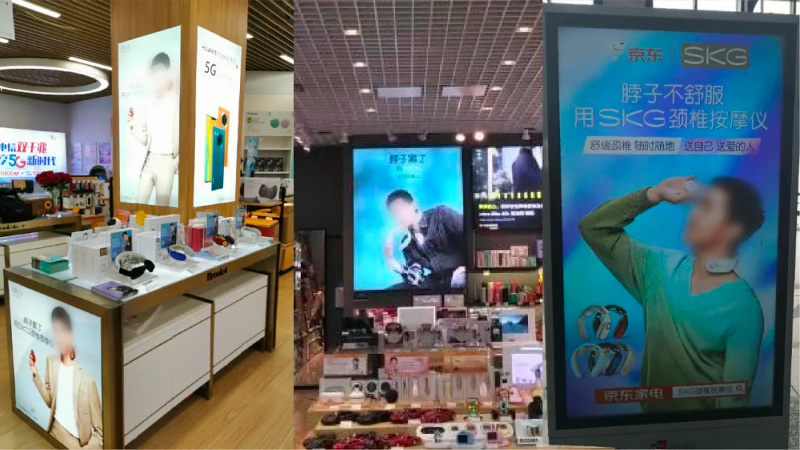
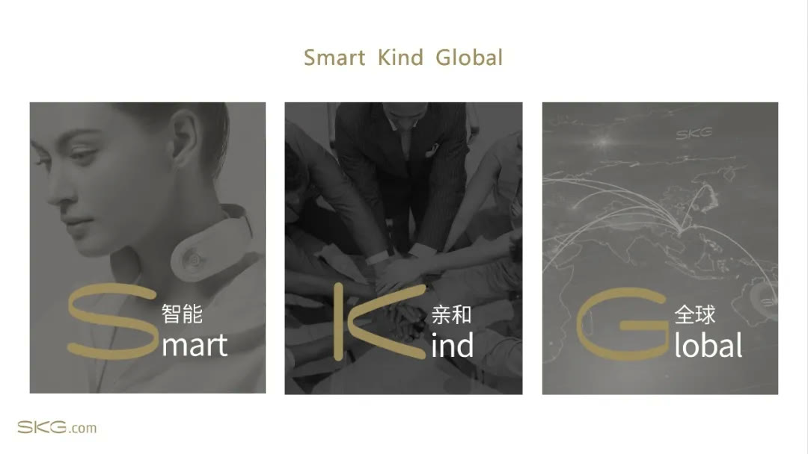
上，让消费者接触到这个符号，就能自行脑补，从而达到闻一知十的效果。创意SKG超级符号，点亮品牌时尚基因华与华符号的创意不在书本上，不在电脑里，不是靠团队脑暴天马行空，而是去到销售现场，去看创意要运用的场所，实现产品在销售现场“优先被看见”的货架优势。届时 SKG 的产品主要陈列在数码潮品店中，我们发现数码电子产品的包装陈列设计有一个特点，基本上都是“黑白灰”的高冷范，仿佛科技就应该是这样冷冰冰的。
对于 SKG 而言，我们认为，它是一个数码电子产品，有其科技的一面；它也是一个健康产品，有其人文的一面；它还是一个可穿戴设备，有其时尚的一面。因此，从产品属性出发，从他所处的货架环境出发，首先确定了其品牌色为蓝绿色。高明度高饱和度的颜色，不仅让 SKG 能一下从货架环境跳出来，优先获得消费者的注意，并且这种颜色还能让“已知乾坤大，犹怜草木青”的受众一看就喜欢。
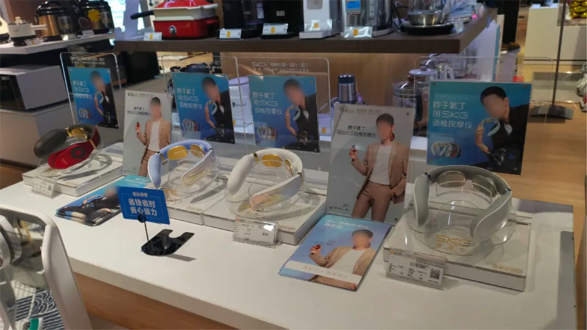
接下来，我们要思考的是，如何让 SKG 三个字母本身也具有生命力，让其具象生动起来，成为消费者可描述、可传播的符号。还是从 SKG 的拳头产品是颈椎按摩仪出发，产品是品牌与消费者最大的接触点，当我们提到健康优雅的脖子时经常会用“天鹅颈”这个词来形容，并且天鹅脖子也是一个 S 的形状。将天鹅颈和 S 完美融合，就有了 SKG 的超级符号，一个具体天鹅型的 S ，让品牌名瞬间活起来。
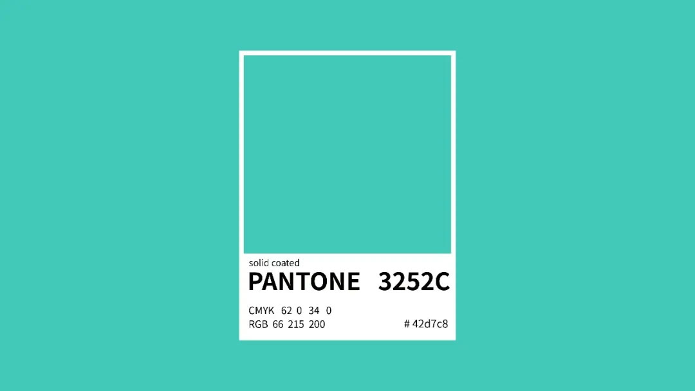
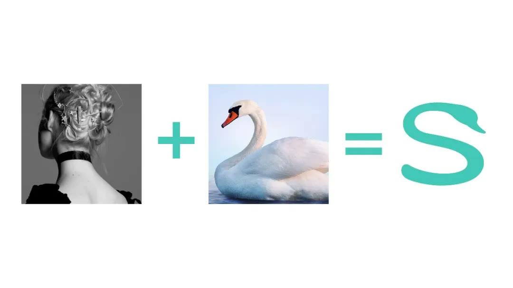
同时，我们将天鹅 S 单独提炼出来，放大成为 SKG 的超级符号，运用产品上、包装上、展架上、广告传播上。
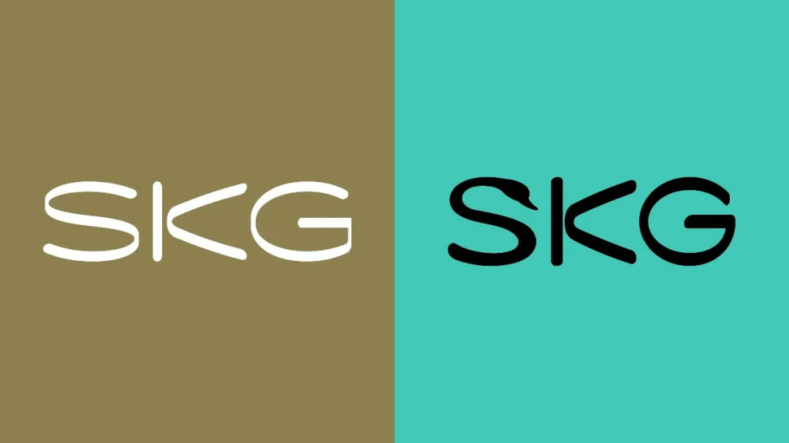
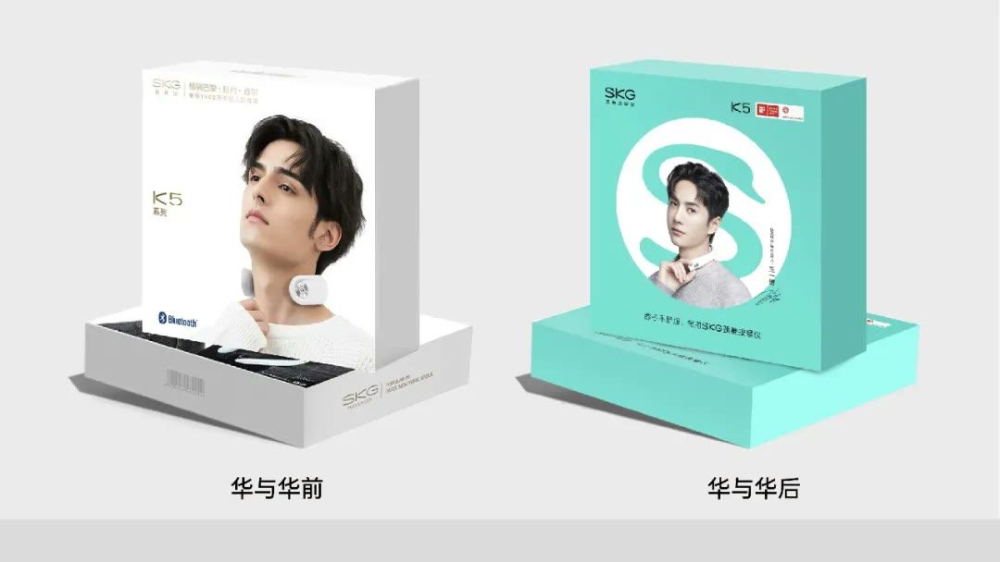
超级符号不仅让 SKG 品牌能够脱颖而出，充分降低了 SKG 的记忆成本，提高了传播效率，实现品牌定型。更重要的是，所有超级符号出现的地方，都让流量注入品牌的储蓄罐，高效积累品牌资产，让所有人流自动卷入。
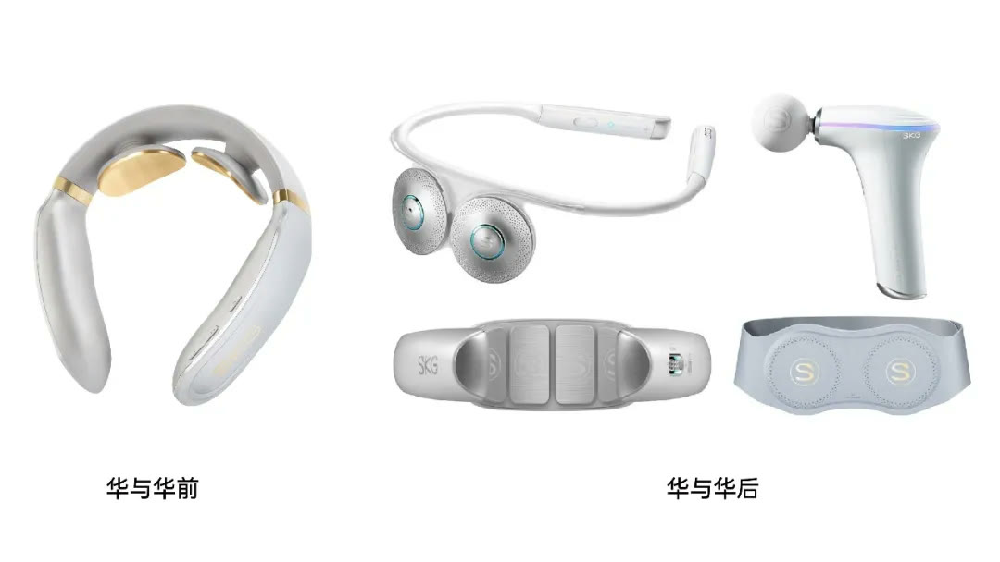
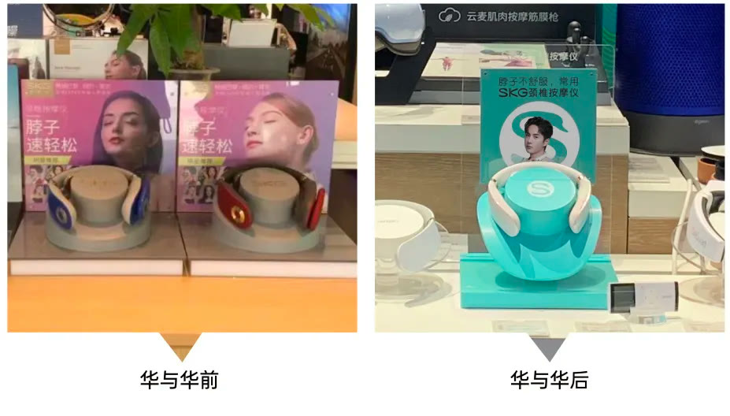
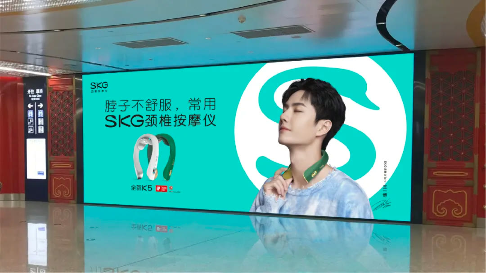
有了超级符号，品牌就有了永续经营的气象与格局。
阶段 2
从线上到线下，建立流量生态
2019 年 SKG 全网种草曝光高达 19 . 45 亿次，消费者如果在天猫、京东、小红书、抖音等平台搜索“颈椎按摩仪”， SKG 就一定能在首屏出现。
随着手机的普及，颈椎问题成为普遍的健康问题， SKG 的产品又是一种创新解决脖子不舒服的方案。一边是广阔的市场需求，另一边又有价值创新的产品，再借助线上的流量红利， SKG 在线上的推广投入取得了不错的 ROI 。晴天修房子，雨天好安身。当企业增长的时候，更要思考如何实现持续经营，如何对未来进行投资，建立起未来的生存能力。2019 年全国零售额为 41 万亿元，其中，线下的总额几乎是线上的 3 倍，占比 74 . 17 %，线下的零售仍然占据主流市场。届时， SKG 的营收有 80 %都是来自于线上的渠道。如果品牌自身是一个流量大水库，作为经营者，为了企业的安全，实时保有水量，我们是不能让其水源集中于一种渠道的，否则企业的命运就被卡在那一种渠道资源上，渠道一停水，我们的水库就见底了。只有建立多层次复合的流量结构，品牌的流量入口增多，流量入口之间互相引流，从而形成流量大开发、大生长，大循环。有了流量的平衡与生发，才有企业的经营安全。2019 年 SKG 已经开始进行线下布局的试水，对线下进行投资，在全国机场、高铁站、Shopping Mall 、 3C 数码店、书店等布局了 750 家网点门店。
华与华在合作的 3 年中，陪伴助力 SKG 从 2019 年的一个产品陈列位、一个产品售卖专柜、发展到 2020 年的一个专卖店、再发展到 2022 年的旗舰店，全面打开下局面。四种线下终端形态，我们稳扎稳打，从小到大，步步为营，让 SKG 线上线下流量日趋平衡，形成了丰富的流量生态，不管是线上还是线下，不管是线下的几种终端形态，都开始互为流量入口，形成了 SKG 品牌流量的大生发和大循环。线下征程第一步——产品陈列专架：元媒体思想重新开发产品陈列专架，实现产品的全自动销售最开始 SKG 的产品呈现的形态，主要是单个产品，以陈列架的形式出现在“别人”的门店中，流量的转化主要是靠数码潮品店、书店、手机店的客流转化，进店客流本身就不够精准，品牌自身的抓手也较少，属于产品分销体系。
我们以颈椎按摩仪的陈列展架为起手式，对进店的消费者的行为进行动作拆解，来思考这个陈列展架，应该如何设计。
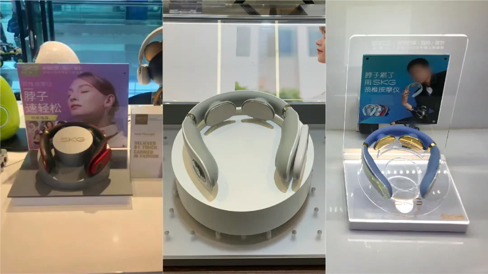
对于一个走进书店、手机店、数码潮品店的人，其实并没有带着“买颈椎按摩仪”的目的预期，这时候这个阵列展架，首要解决的问题就是“被看到”，吸引消费者的注意，让他先看到我们，并且做到被看到的同时被理解，让消费者清楚地知道，我是一台“颈椎按摩仪”，而不是其他。为此，我们将陈列架当成一个媒体来开发，五大关键动作，设计了天鹅颈陈列展台，让他发挥店中店的效果，在门店没有专属售货员的情况下，也能提高产品的销售转化率。
关键动作 1 ：人小我大。如果把货架当成一种领土资源，那如果陈列台越大，占有的资源也就越多，天鹅陈列台比一般的陈列台要大 30 %，块头大自然就压过块头小的，优先吸引到注意。关键动作 2 ：人暗我亮。生物趋光性，天生对发光的东西、亮的东西会多看两眼，我们让 SKG 颈椎按摩仪的字体发光，亮明身份，降低理解成本。
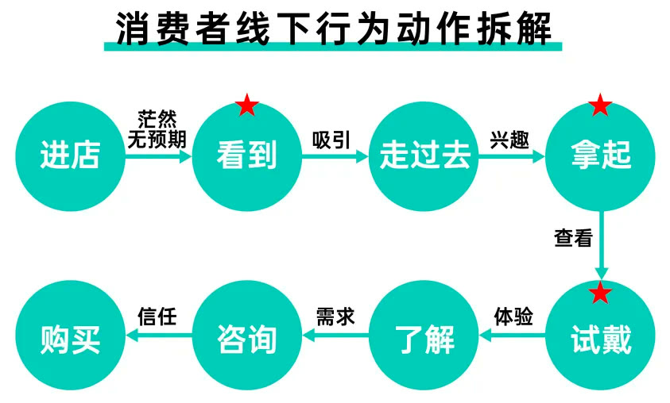
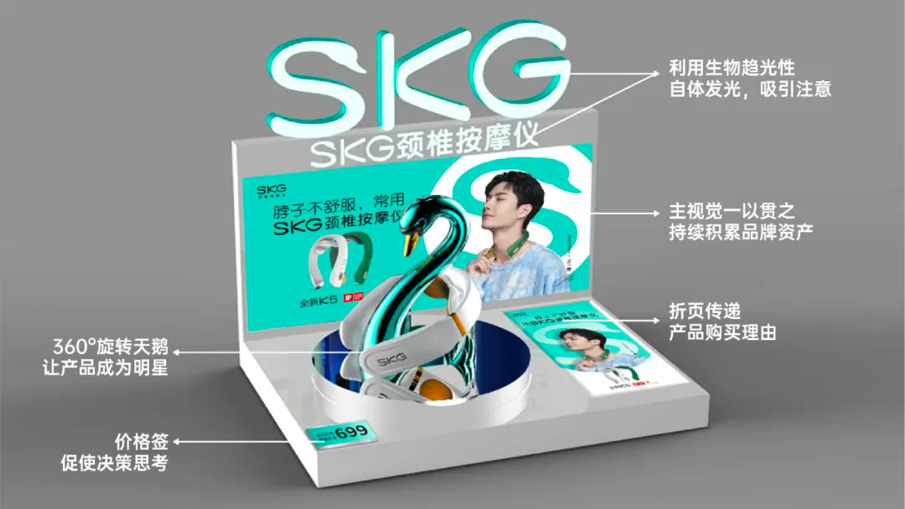
关键动作 3 ：人静我动。动态的东西总会优先吸引到注意，我们让超级符号天鹅颈进行360 °旋转，让产品成为整个店面的明星。关键动作 4 ：人少我多。我们充分发挥陈列台的元媒体属性，通过超高的信息密度，提升其卖货效率——产品的购买理由“脖子不舒服，常用 SKG 颈椎按摩仪”打动购买，价格签促使购买决策，旁边留出折页位置，相当于一个导购员，与有兴趣的消费者深入沟通。关键动作 5 ：人碎我整。将传统的品牌名、产品型号、陈列台面、价格牌、折页信息等一系列的内容，进行整合在一起，形成一次完整的“吸引——成交”的进攻。
随着一只只蓝天鹅飞入终端网点， SKG 品牌被越来越多人认识和了解，也让经销商对于 SKG 有了更多的信心，愿意投入更多来售卖 SKG 产品，推广 SKG 品牌。线下征程第二步——品牌专柜：用色如用兵，通过SKG品牌蓝建立品牌阵地终端即广告，产品陈列从点到面的扩大，不仅能扩大品牌的排面，也能提振品牌的势气。而排面的扩大，也需要产品 SKU 有一定的拓展，才支撑得起来。SKG 除了纵向拓展了自己的强势品类颈椎按摩仪外，也横向推出了便携筋膜枪、以及眼部按摩仪，让我们在终端能够拥有一个属于自己的专柜。为了提升 SKG 专柜的元媒体属性和消费体验，华与华在专柜的设计上，也做了 2 大关键动作：
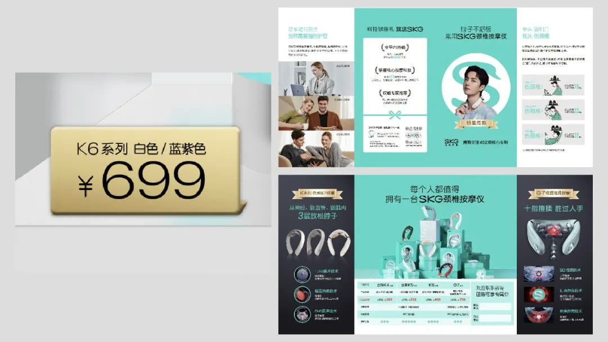
关键动作 1 ：从人体工程学出发，设计专柜。与一般的方形陈列柜不同，我们通过圆弧的造型，台面比柜体要延伸出来部分的设计，来增加消费者与产品的“亲近感”，人能站得离台面更近，也就更能深入拿起体验产品。
关键动作 2 ：一个展架就是一个独立的作战单元，模块式设计实现降本增效。当 SKG 有一个新品上市概念的时候，华与华项目组就要开始着手设计相关的陈列展台，陈列展台的设计也相当于是产品的再开发。过往都是针对产品做单独的设计，所以尺寸规格、呈现形式都略有不同，这种略有不同不仅导致了每一个产品陈列台都要单独的开模设计，成本上升，也导致了在一张专柜上呈现上，陈列高高低低，显得凌乱。为此，我们创意设计了通用化的陈列架——将陈列台进行模块化，插拔组装化，来降低因为每一款产品所需要的个性化设计，经供应商测算，直接将陈列架的成本降低200 %。
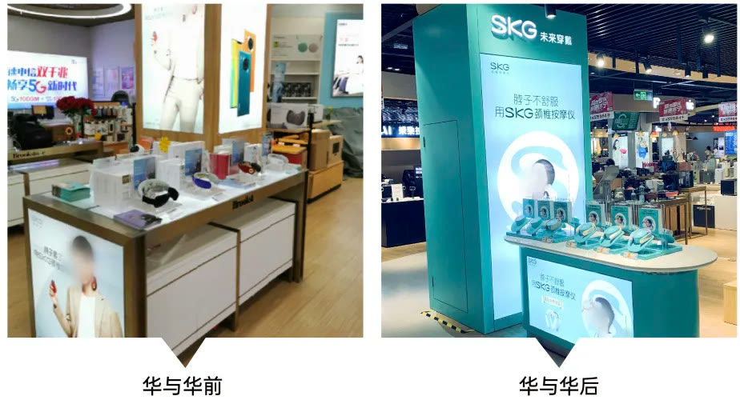
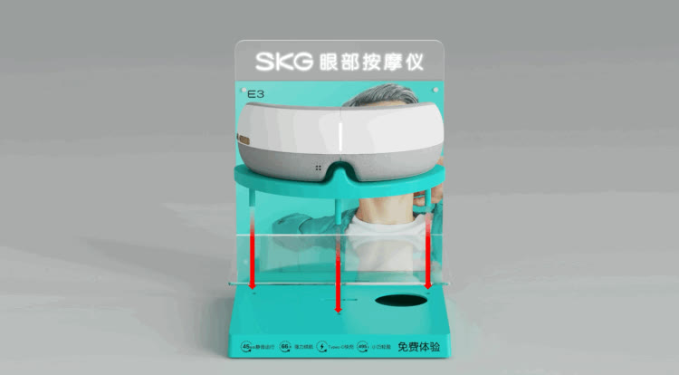
这种高度统一、大小统一、色彩统一、整齐划一的展架，也让 SKG 在终端从单兵作战，到形成了一个品牌阵营，带来更高的销售转化。线下征程地三步——专卖店：通过持续改善技术，为专卖店提亩产增效益2020 年 7 月， SKG 第一家专卖店在南京淮海路苏宁开业。华与华从最开始的现场测量，到输出方案，到跟进执行，全流程参与并追踪到底。从我们给出门店设计方案，到客户门店开业只用了短短 1 个月的时间。
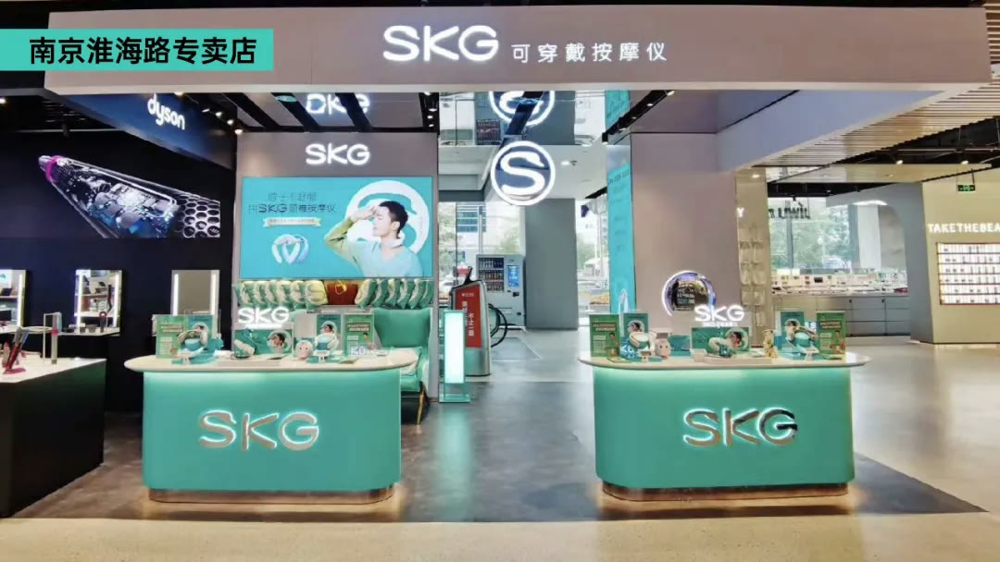
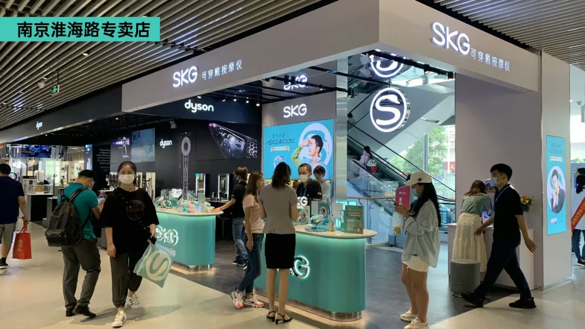
这一家店面对于招商具有里程碑意义，因为不仅 SKG 的产品从颈椎按摩仪、到眼部按摩仪、到筋膜枪有所拓展，而且对于经销商而言，店面的开模成功，就是他们有可以看到的投资产品形态。不过 2020 年， SKG 的产品在多样性和价格带的覆盖广度上还不足以覆盖一家边铺的盈亏平衡点，于是采取了先开“多经点位”店铺的策略，先拿到进入商场资格，相对成本更优又能享受到商场客流的红利。
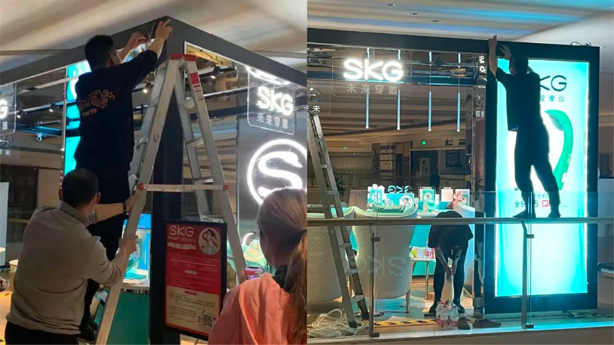
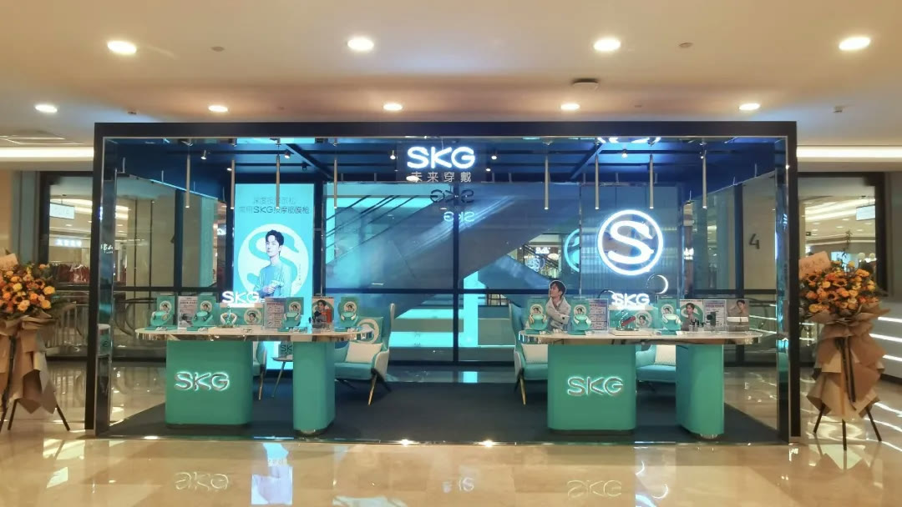
▲多经点位店铺，是三面、甚至是四面通透的店铺，经常位于商场的走道中间
我们深知开一家店铺容易，难的是让店铺保持好的盈利能力。只有好的盈利能力，才能形成更多的正向反馈，也会品牌流量的增强回路不断加强，吸引更多的合作伙伴加入。为此华与华以 SKG 深圳布吉万象汇的多经点位门店为样板，进行“终端销售持续改善”工作，围绕“路过人数、注意人数、进店人数、购买人数”的流量漏斗，在每个环节精耕细作，以提亩产为目标。最终，我们实现了注意力提升 118 . 35 %、进店率提升 31 . 14 %、销售额提升 59 . 94 %的改善成果。也将改善的动作形成终端卖货宝典手册，向全国进行推广复制，向着店店盈利的目标前进。
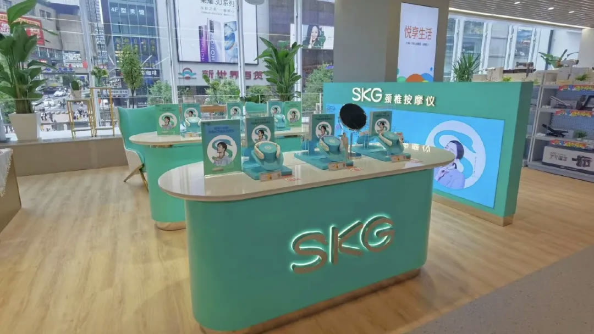
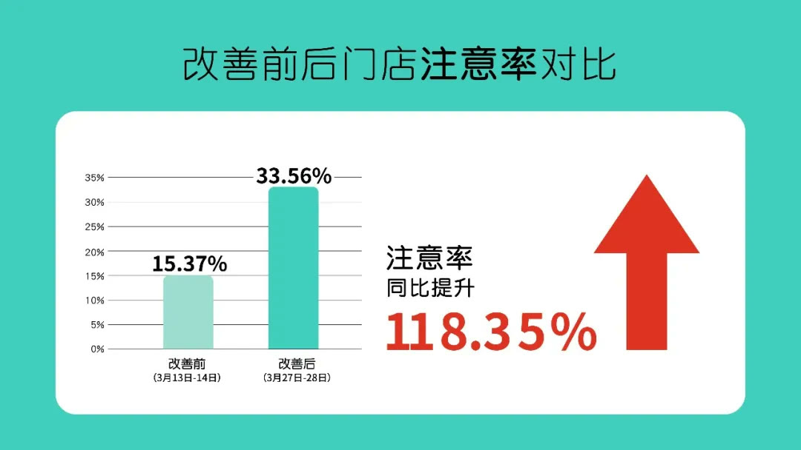
线下征程第四步——旗舰店：通过精益设计，让旗舰店作为城市招商标杆对于 SKG 而言，产品通常比较适合坐下来体验，边铺就比三面通透的多经点位，体验感更好。随着 SKG 的产品线开始丰富，更有价值感的产品研发出来，客单价开始拔高，足够支撑得起一家边铺店了。加上盈利模式的跑通，数据测算下来边铺的销售额是多经点位的 4 ~ 5 倍，也给了经销商开大店、开旗舰店的信心。华与华的商业空间设计不同于一般的空间设计，在于通过精益设计让每个区域规划都有其目的，从而提升销售的亩产效益，让门店不仅能热热闹闹开起来，还能长长久久活下去。门头设计的目的，是创造惊鸿一瞥的发现感。
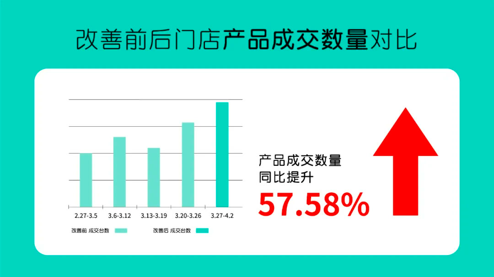
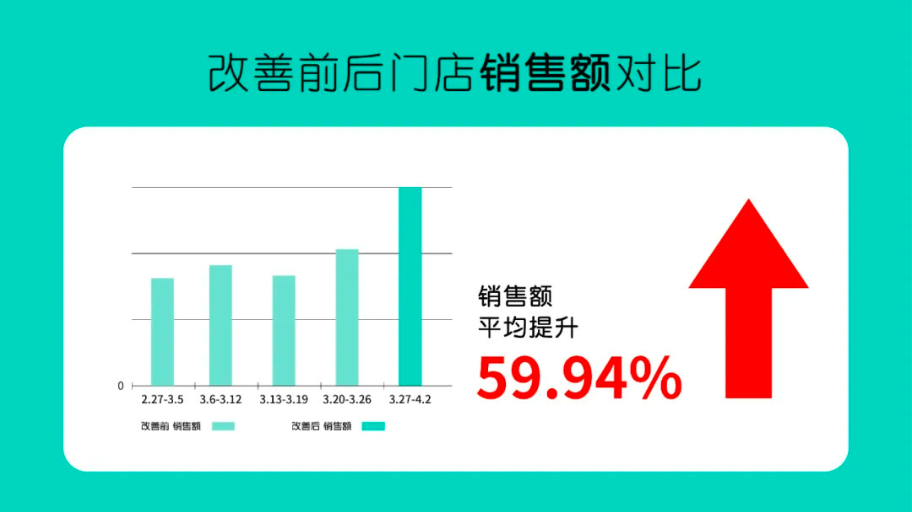
对于门店这一产品而言，它是陈列在商场的楼层当中的，整个商场就是它的货架。我们通过顶天立地的门框式门头，铺满 SKG 品牌蓝，让我们的门店能在大型商场纷繁复杂的陈列环境中，能够快速发现 SKG ，当门店成为逛街的目的地的时候，也能让他快速找到门店不迷路。门口物料的目的，是激发消费者的进店欲。
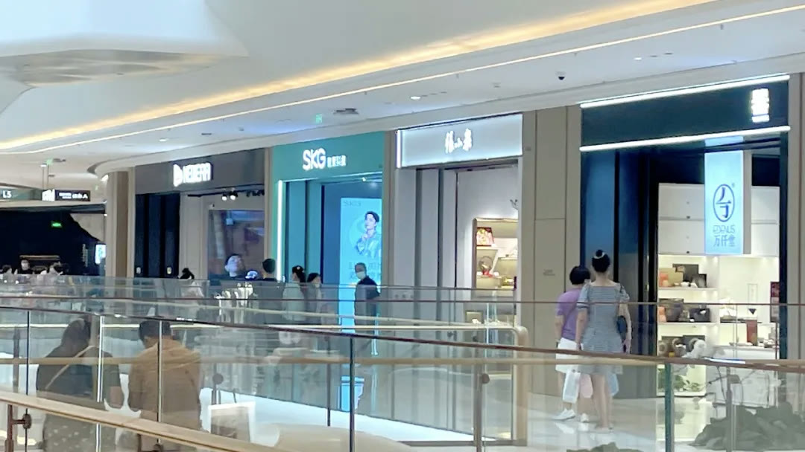
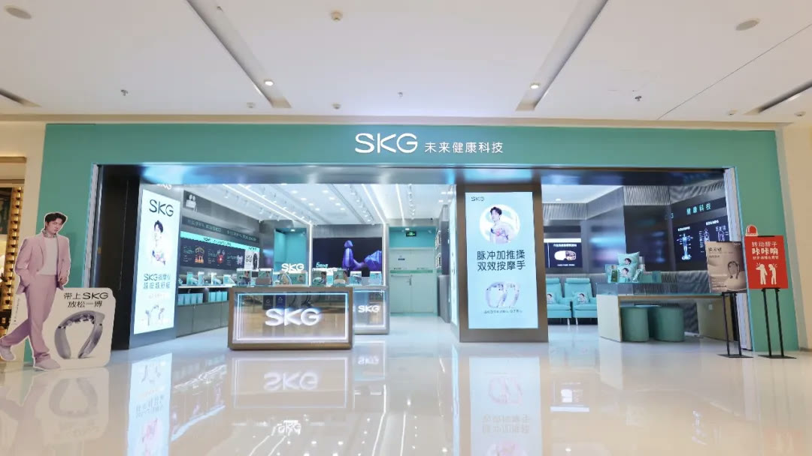
基于消费者行为学，释放促使行动的信号，我们在每家门店的门口都放上了“转动脖子咔咔响，就是颈椎在报警”的立牌，让每一个路过看到这个信息的消费者，都接收到这个指令，我们就提供了让每个人在商场环境里，不觉得尴尬，就能完成自测的小动作，从而提高消费者的进店率。功能分区的目的，是提升销售转化率。产品陈列区根据消费者动线，将主推产品放置于门店客流主入口处及消费者视觉聚焦处，让顾客能够一眼看全产品品类、一眼看到主推产品。
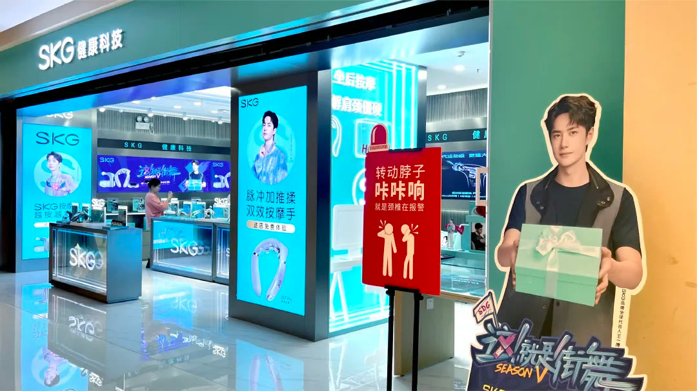
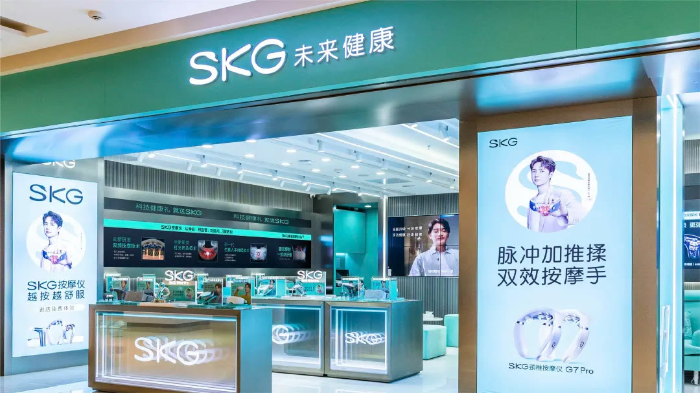
侧面陈列区，放上 SKG 的产品科学，为消费者提供购买理由的同时，也降低了销售员的讲解成本。
场景展示区通过营造家庭、办公、健身 3 大场景，办公场景提示“久坐”这一母体行为，通过“缓解肩颈僵硬”打动购买。
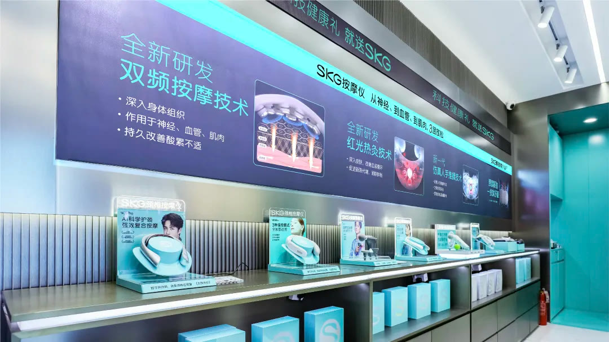
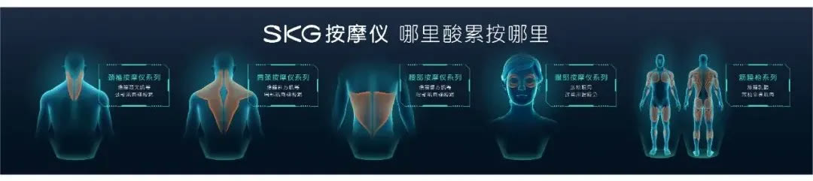
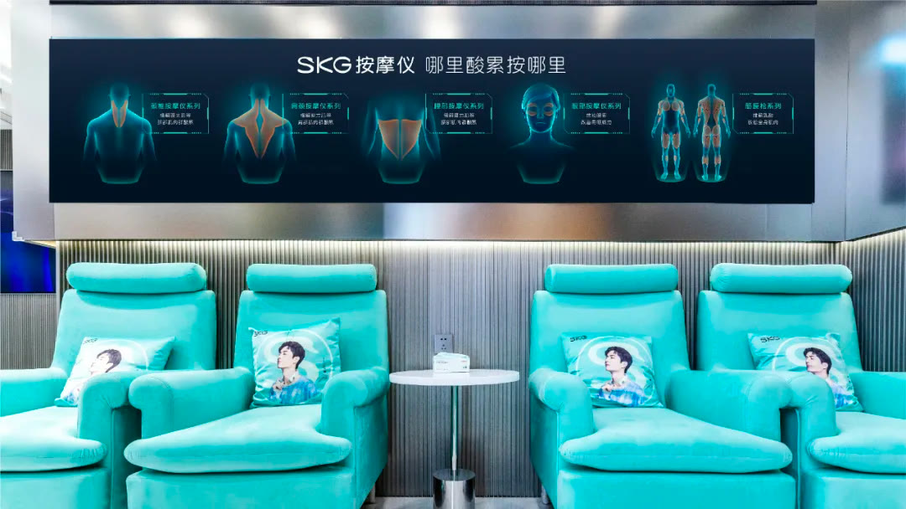
门店设有沙发体验区，为店员创造了深入沟通，促成购买的空间与时间。
体验区正对面，墙上有健康知识信息，自测圆肩驼背问题，及改善方法，让消费者带走知识。
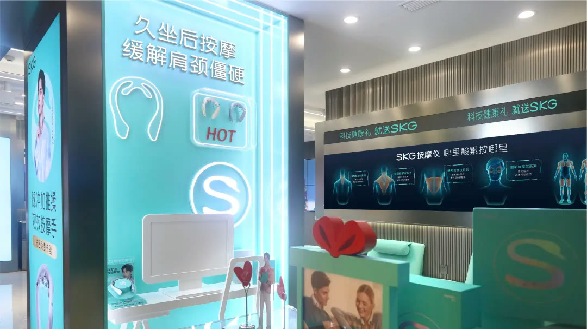
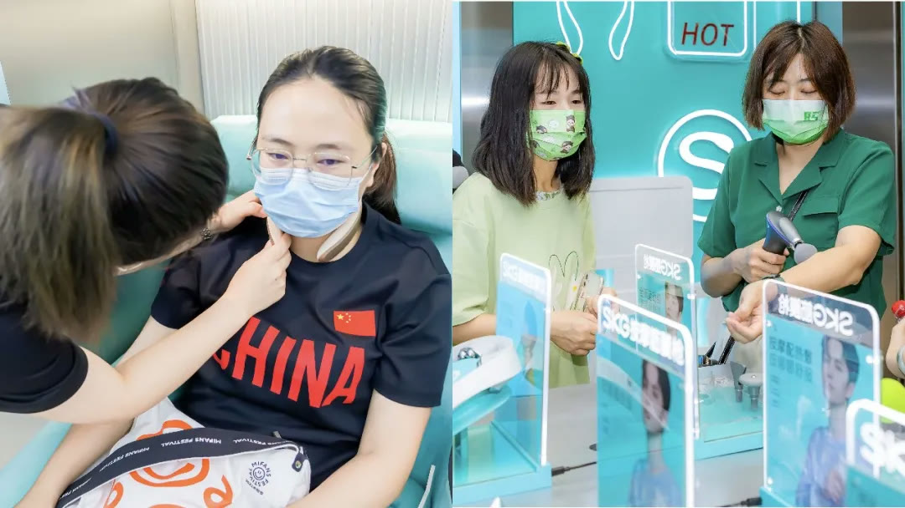
通过这样的思维，让每个平米都能物尽其用，打造出了实现消费者购买、经销商售卖、SKG 品宣三方目的的门店，目前 SKG 旗舰店已经在多地陆续卡也落地。到今天， SKG 步步为营，已经在全国开出了超过 7 家旗舰店、 150 家专卖店、 400 个专柜、 1000 个零售网点。
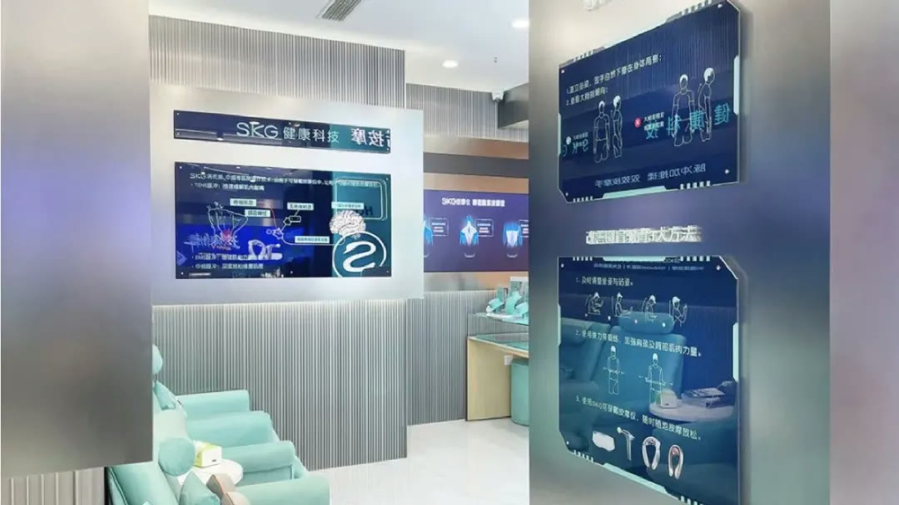
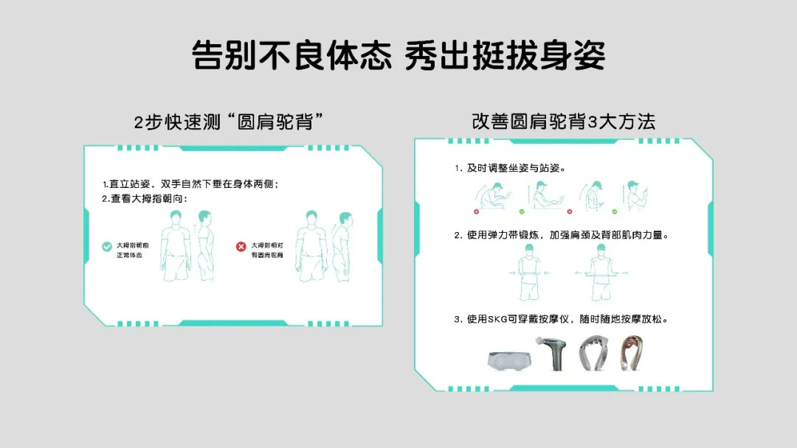
旗舰店和专卖店成为渠道的中坚力量，旗舰店具有梳理品牌形象，推新卖贵，区域招商的重要标杆作用，专卖店实现了 SKG 的全品类销售。专柜及专架网点式的终端陈列形态，则是 SKG 作为区域经营的毛细血管，扩大品牌的基础面与出镜率，不仅提升了 SKG 与经销商的粘性，还让更多的消费者发现 SKG 就在身边。这样丰富的终端形态，平衡了线上的发展，让 SKG 从线上世界走到现场看得到、摸得着、体验好的线下世界，带来的不仅是营收的增加，还有品牌势能的增加，以及企业整体抗风险能力的增加。
阶段 3
战略涌现的关键决策：从未来穿戴到未来健康
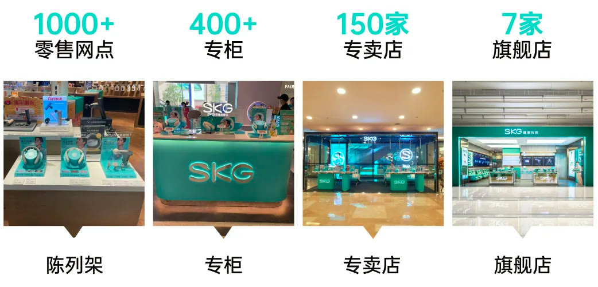
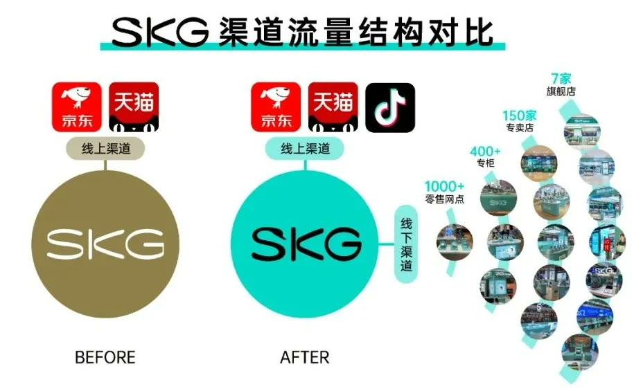
2019 年我们提出“可穿戴按摩仪”的品类战略，让 SKG 每年投入的大额研发费用有了主线路。随着产品线的战略性扩充，让 SKG 在线下终端的形态能实现从陈列占位、到专柜、到专卖店、到旗舰店的四步跃升。根据这一品类战略， SKG 的中文名也在我们 2019 年的首次提案中更改为“未来穿戴健康科技有限公司”。战略是一种涌现，随着 SKG 产品的丰富，“可穿戴按摩仪”不足以覆盖筋膜枪、血压手表等新产品。而这些产品都有一个共性——健康科技。用科技改善健康的理念，研发生产颜值上好看，使用上好用，功能上有用，放心用的产品。为此我们提出了“科技健康礼，就送 SKG ”的品牌口号，打开 SKG 的礼品市场，形成消费者的口语报道，在节日里，为消费者提供了一个选购的理由，直接拉动了门店团购的销售。
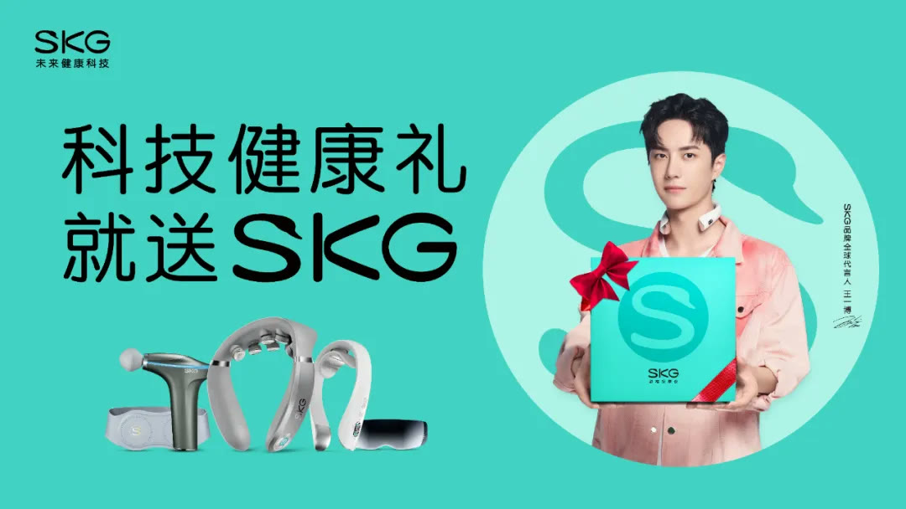
文本总结3 年的合作，华与华从超级符号着手，点亮 SKG 时尚基因，建立起属于自己的流量大水库。让每一分花在流量购买上的费用，都能积累成为品牌资产，为品牌带来复利，在提高传播效率的同时，不断降低流量成本。品牌定型，为企业未来百年的发展道路奠定品牌基础。3 年的合作，华与华助力 SKG 从线上走到线下，实现了从专架、到专柜、到专卖店、再到旗舰店的四步升级。一路打通关，建立多元的复合渠道流量生态，实现流量的平衡与生发，让品牌的安全经营，获得企业的安心感。3 年的合作，华与华随着 SKG 的产品发展，正在着手扩充放大 SKG “科技健康礼”的企业战略，以期 SKG 从企业成功走向事业成功，让 SKG 的事业与人类的生命健康事业相结合，成为用科技改善健康领域的首选品牌。3 年来， SKG 连续三年实现增长，产品持续热销。在刚刚过去的双十一中， SKG 斩获天猫平台、京东平台、抖音平台按摩器材行业销售额 TOP1 ：1 ）全新爆款 W7 系列斩获天猫平台、京东平台、抖音平台腰部按摩仪类目销售额TOP1 ；2 ）明星经典 K5 系列斩获天猫平台、京东平台颈椎按摩仪类目销售额 TOP1 ；3 ）多款人气单品颈椎按摩仪、眼部按摩仪、膝部按摩仪畅销多平台荣获单品销售额 TOP1 。
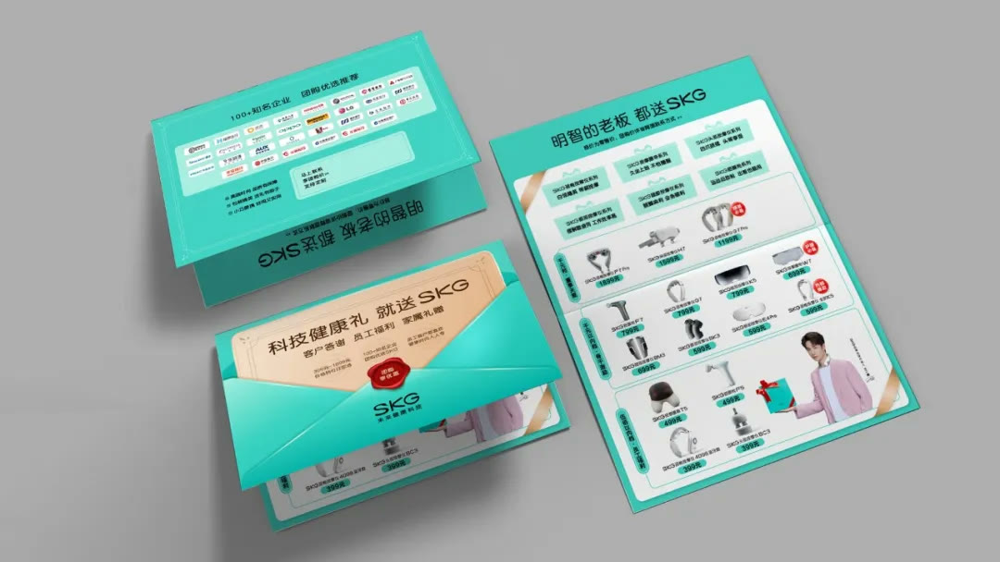
未来的路还很长，我们会在始终思考如何能助力 SKG 建立自己不可撼动的事业，实现战略自由，安全经营，走向一生不败，而努力。